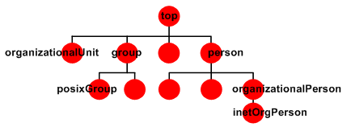

Nomenclature
LDAP - Used to access information in directory services (more specifically active directory in this scenario) over a network.
LDAP name structure:
LDAP://DC01.yee.wtf/DC=yee,DC=wtf
hostname = "DC01"
Domain Component (DC) = “yee.wtf”
Distinguished Name = DC="yee,DC=wtf"
object = Thing. Example:"A user named Patrick" of “A group named ‘Server Admins’”
objectclass = The charachteristics assigned to a type of object. Example:"A user object type needs to have a ‘Display Name’ and can also have an address"
objectclass attribute = The value of the charachteristics assigned to an object. Example:"The objectclass attribute of ‘Display Name’ for Patrick is ‘P.Rothfus’"
UPN - User Principal Name - Used to Identify a user account. Example: “JGrisham@yee.wtf”
SPN - Service Principle Name - Used to identify a service account (Like a UPN, but for a service and it associates a user account) - A mechanism used to provide specifc access to a an instance of a service on a machine. When a session ticket is presented to a SQL server the SPN needs to match that of the principal name of the SQL service. This exists to limit access to just the sql service as opposed to the entire SQL server. Example: “http/iis.yee.wtf tripp” http=service iis.yee.wtf=servername tripp=assosiated user
MSA - Managed Service Account - An account with a long complex password, programatically changed periodically. MSA's are choice for accounts used to own/run SPN services.
Lsass - Process that localy stores cached Windows creds.
WDigest - Protocol used for clients to send cleartext credentials to HTTP and Simple Authentication Security Layer applications. Windows stores the password in memory for convenience of the user when they login to their workstation.
Nonce - In cryptography, a nonce is an arbitrary number that can be used just once in a cryptographic communication. (Used in NTLM authentication)
COM - Component Object Model - COM is an old Windows standard that enables interaction between programs. An example of a COM object would be a Word document with an Excel docement inside it that changes with the original Excel document. The more modern version of COM is .NET framework.
DCOM - Distributed Component Object Model - Unlike COM, DCOM is actually a protocol. DCOM is a subprotocol for MSRPC (port 135, Microsoft enhanced Remote Procedure Call) and is used to bridge the connection between software components and network components. Outlook over HTTP utilizes DCOM.
Token - Each process on a windows machine has a token. The token describes the privileges of that process.
Mandatory Integrity Control - A Process's Context Integrity - Defined as System, High, Medium, and Low. A process's context integrity defines its “trustworthyness,” which in turn determines what that process will have access to. For example IE by default will run in either a medium or high integrity context depending on how it is kicked off, but each tab will run in a low integrity process due to its low “trustworthyness.”
What is the difference between a user account and a service account? - Nothing. Just how it is implemented.